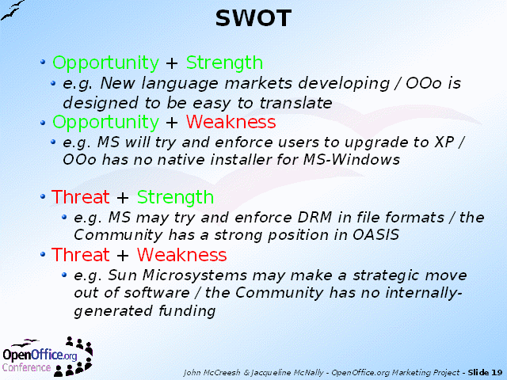

Notes:
T-S: Threats and Strengths = a defensible position if we are aware of the risks
T-W: Threat + Weakness = an area needing serious attention
The Strategic Marketing work could easily suggest far more possible actions than the Community could support. SWOT analysis is designed to help prioritise these proposals.